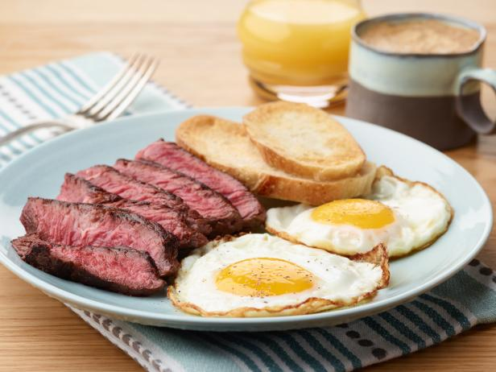

Steak and Eggs

The best steak and egg recipe
My favorite breakfast food. Good source of protein and a great way
to start the day.
Ingredients
- 1 tablespoon vegetable oil
-
One 1 pound sirlion steak (about 1 inch thick)
- Koshe salt and freshly ground black pepper
- 2 tablespoons unsalted butter
- 8 large eggs
Steps
- Preheat the over 350 degrees F.
- Preheat a large cast-iron skillet over medium heat until hot, about 5 minutes.
Raise the heat to high and add the oil. Season the steak generously with salt and pepper. Place the steak in the skillet and cook,
turning once, until well-browned, about 4 minutes per side. Transfer the steak in
the skillet to the oven and cook for 5 minutes more for medium-rare
- Transfer the steak to a cutting board. Cover it loosely with foil and let rest for 10 minutes before carving
- While the steak is resting, cook the eggs. Heat 2 skillets over medium-low. Melt a tablespoon of butter in each pan. Break 4 eggs into each skillet.
Season the eggs lightly with salt and pepper, and cook until the whites are just set, about 3 1/2 minutes. (If you want the yolks to be cooked through, cover, and continue cooking
for 1 to 2 minutes more.) Divide the eggs among 4 warmed plates
- Cut the steak on the diagonal into thick slices. Fan the steak slices on the plates and serve immediately.